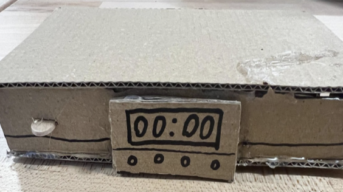

The overarching theme that came from our feedback was criticism of the fact that our product required user discipline in order to function properly, which is counterintuitive to the question we are answering. Users liked the timer functionality, as well as finding the ability to use emergency features without removing our phone a smart addition. It gave them a sense of security, while also preventing what would be an easy way to remove one’s phone. They worried about other non-emergency situations, such as an important business call or other important messages, to which we either must account for that in some way to respond, or simply must make the user aware of their inability to get their phone when it is put away. Another piece of criticism that was offered was in the case that one accidentally input a time they did not intend, such as accidentally opting for 500 minutes rather than 50. A safeguard that we thought of was requiring the user to input the time twice in a row, guaranteeing a correct choice. This, however, would come at the expense of a guiding principle of our design, being that one must only put their phone away impulsively in order to not be on it for an extended period of time. This idea guided our conversation, with much skepticism coming from some users who believed that those who would use the product would be inclined to put their phones away without it. The primary rebuttal was the fact that many people are able to put their phone away on a whim, but are unable to keep it away. Our product would remove the second step, being the retrieval of one’s phone.
Safety and Security: Users would like the box to be safe/fit for their phone while also allowing a way to call for help in emergencies. The five-press emergency feature addresses this. Ease of Use: The box should feel intuitive to interact with, ensuring the users don't face frustration when locking or unlocking it or activating emergency services. Reliability: Users need to be able to trust the box's timing mechanism and emergency functionality to work without glitches or malfunctions, especially in these emergency situations.
Functional Robustness: The timer and locking mechanism must work seamlessly, with clear feedback to users (e.g., visual or auditory indicators when the box is locked or unlocked). Emergency Accessibility: The five-press emergency call feature must be fail-proof, distinguishable from accidental presses, and should work even if the timer is active. User-Friendly Interaction: Clear instructions and intuitive design elements (e.g., buttons with clear tactile feedback or labeled indicators) to guide users during setup and daily use. Aesthetics: The box should be clean and modern design that feels approachable and practical rather than intimidating or overly complex.
The idea most central to the lockbox system is the idea that it makes putting the phone away an impulse decision and keeping it out an ongoing one, reversing the challenge of phone distractions, while effectively invalidating the most important excuse for keeping phones always accessible, that being the need to communicate in an emergency. Essentially, our goal is not to end phone reliance for everyone, but to provide an aid to people who want help limiting the distractions it poses in their lives. 3. Designer Principles Empowerment and Control: The design should help users feel in control of their security and the emergency system, reinforcing a sense of independence while also creating independence from their phone addiction. Inclusivity: The product must cater to a wide range of users, including those who may not be tech-savvy or have disabilities.
Our initial low-fidelity prototype displays the key features of our product, including a timer and lock. We were yet to decide what the closing mechanism would be, as well as specifics on the dimensions and materials that would be used in the product.
